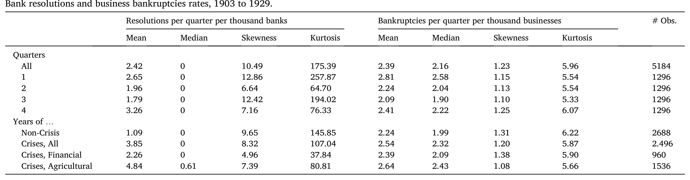
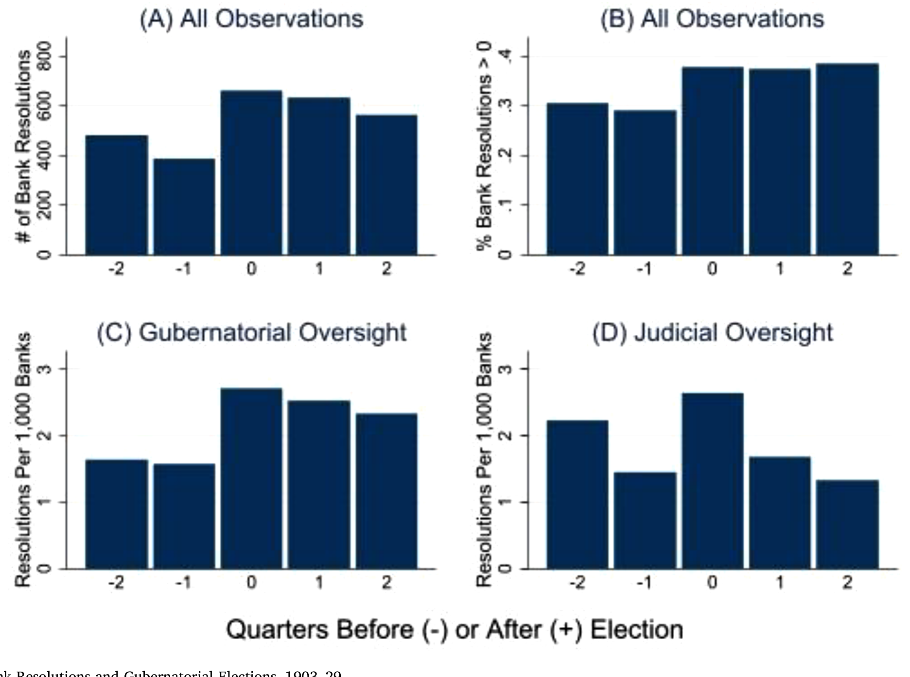
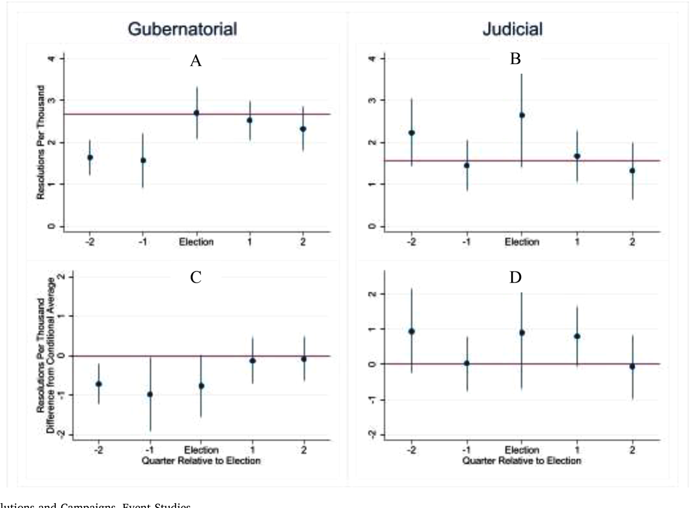
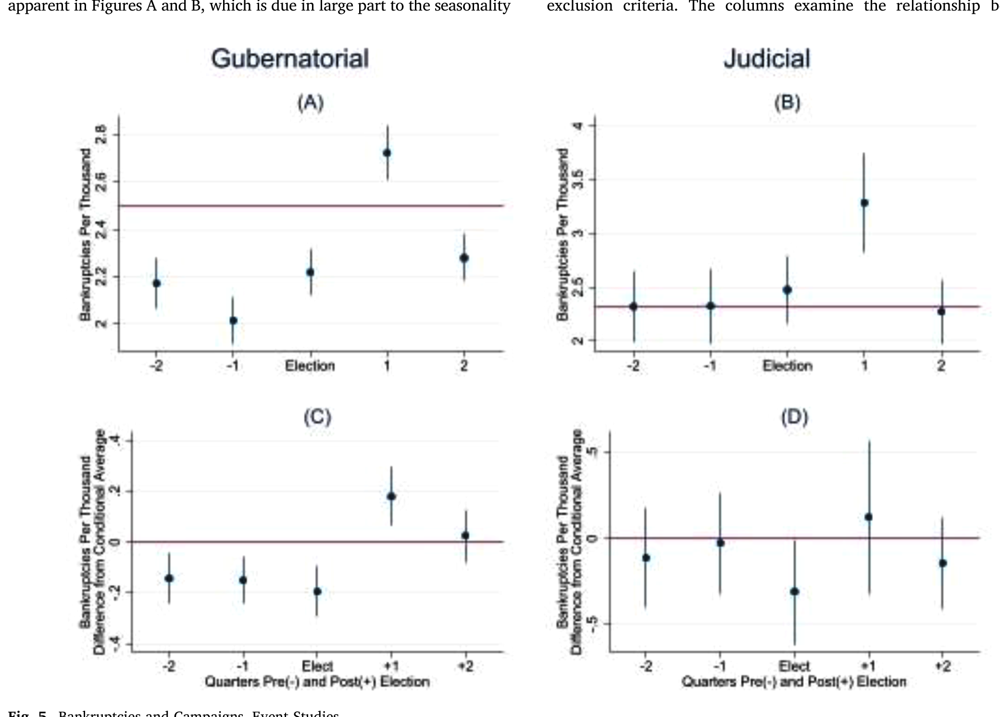
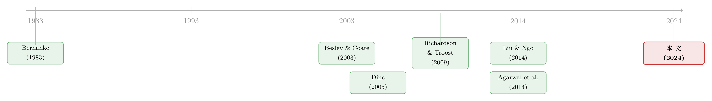

选不选他，决定了银行什么时候倒——一场进步时代的「监管独立性」实验
本文读的是 Del Angel & Richardson (2024, Journal of Financial Economics)：当美国进步时代（Progressive Era）一半的州把「关停问题银行」的决定权从独立的法官手里，交到了听命于州长的官僚手里之后，每逢州长竞选，银行倒闭率就会神奇地「踩刹车」——三分之一的竞选季里，这些州的银行倒闭数被一路压到了零。这个「竞选效应」的量级，是 1976–2012 现代样本的 100 多倍（精确说是 140–169 倍）。更要命的是，被硬压下去的银行倒闭，又顺着信贷把企业破产率一起压低了 9% 到 33%。等到 1935 年 FDIC 成为独立的统一清算人，这个效应缩小了两个数量级——但并没有归零。
1 一桩官司，和一个被翻出来的老问题
故事的引子，是一桩离我们很近的官司。
2020 年，美国最高法院在 Seila Law v. CFPB 案中裁定：消费者金融保护局（CFPB）独立于总统监督之外的设计「违宪」。这背后是「单一行政权」（unitary executive）理论——它主张那些独立联邦机构本身就不该存在，机构负责人应当「伺总统之意而任职」，总统想撤就撤，而不是只有「正当理由」（good cause）才能罢免。这一刀如果继续切下去，下一个躺在手术台上的，可能就是美联储和 FDIC 的独立性。
于是一个看似抽象、实则要命的问题被重新摆上桌面：监管者的独立性，到底值不值钱？ 如果把金融监管者从「独立」改成「听政治家的话」，他们关停问题银行的决定，会不会就此变味？
这个问题难就难在——你没法做实验。你总不能真把 FDIC 的独立性砍掉，看看会死多少银行。
但作者找到了一台天然的「实验室」。
2 一台尘封了一百年的政策实验机
把时钟拨回到 1903 到 1922 年。那二十年里，美国一半州的立法机构干了同一件事：把「何时、如何清算一家陷入困境的银行」（bank resolution，下称银行清算）这个决定，从法官手里搬到了官僚手里。
这一搬，搬出了一个近乎完美的对照结构。我们来拆解一下它为什么干净：
首先，法官是独立的。在旧制度下，存款人若怀疑一家银行还不上钱，就把钱挪走、或者去法院起诉；法官查实欠债属实后，接管银行、指派接管人（receiver）清算变现、偿付债权人。整个过程没有政治的手能伸进去。
接着，新制度里的官僚却不是独立的。这些银行监理官（bank superintendent）由州长任命，州长可以「随意罢免」（remove at will），职位本身还是政治分肥（patronage）的筹码。法律给了他们极大的自由裁量权（discretion）——法律甚至要求他们在动用清算这种「重手」之前，先给银行机会去自我修复。换句话说，「网开一面、再等一等」是被法律鼓励的，只有当存款人面临迫在眉睫的损失、再拖就要酿成大祸时，监管者才被迫出手。
然后——这是这台实验机最妙的地方——这次改制只改了一部分银行。进步时代实行的是双重银行制（dual banking system）：约三分之二的银行持州牌照（state charter），约三分之一持国民牌照（national charter）。改到州长手里的，只有州牌照银行的清算权；国民银行的清算，始终攥在货币监理署（Office of the Comptroller of the Currency, OCC）手里。而 OCC 恰恰是独立性的样板：货币监理官由总统任命、参议院确认，任期五年，只有总统和参议院共同同意才能罢免——国会当年这么设计，就是为了把党派之手挡在银行监管之外。
于是我们手里有了一组天然的对照：同一个州、同一场竞选、同一段经济周期下，州牌照银行（受州长辖制）vs. 国民银行（受独立的 OCC 辖制）。再加上「改了制的州 vs. 仍由法官说了算的州」「州长竞选 vs. 联邦职位竞选」这两层对照，识别的骨架就立起来了。
为什么偏偏盯着「竞选季」？因为这正是政治激励最赤裸的时刻。当时州长竞选要持续六到九个月。在位者深信：经济好的时候选票多，经济差的时候选票少；而银行倒闭，是被全国报纸（《纽约时报》《华尔街日报》无论倒的银行多小都要报道）盯着的、最显眼的「坏消息」。所以每到竞选季，州长就有强烈的动机让监理官「手下留情」，把坏消息往选举日之后压一压。
3 先看一眼数据：中位数是零的世界
作者为此新建了一套数据：1903–1929 年，按州、按季度的银行清算率与企业破产率，覆盖美国本土 48 州（剔除怀俄明）。样本起点选 1903，是因为 1898 年《破产法》（Bankruptcy Act of 1898）之后，数据口径才开始一致；终点选到 1920 年代末，是因为 1930 年代初的一系列法律变动终结了这个制度。
数据的第一印象就很有冲击力。如表 1 所示，全样本里每季度每千家银行平均有 2.42 家被清算，但中位数是 0——也就是说，在大多数州的大多数季度里，根本没有银行倒闭。偏度 10.49、峰度 175.39，是一条尾巴极厚的分布：平时风平浪静，危机时刻才集中爆发。

Table 1
按季度切开看更有意思：第一季度（Q1）平均 2.65、第四季度（Q4）高达 3.26，而第三季度（Q3，盛夏）只有 1.79。按危机切开看：无危机年份平均只有 1.09，而 1920 年代的农业放贷危机把清算率顶到了 4.84，1907、1914、1920–21 这几次金融恐慌期间则是 2.26。这条厚尾，正是后面所有故事的舞台。
4 第一个反转：竞选一来，银行就「不倒」了
把数据按「是否处于竞选季」（竞选季通常是州长选举前的两个季度）一刀切开，第一个反转就出现了。
如图 1 所示，Panel A 数的是选举前后各季度的州牌照银行清算总数——竞选季里少倒了数百家银行。Panel B 看的是「至少有一家银行被清算」的季度占比——竞选季里，这个比例比之后的季度低了约 10 个百分点。

Figure 1: Bank Resolutions and Gubernatorial Elections
这只是「看图说话」。真正关键的一步，是把它做成因果。作者的做法是双重差分（difference-in-differences, DiD）：利用「改制」这个时点，比较改制前后、竞选季与非竞选季、州牌照与国民牌照之间的差异。其第一阶段（first stage）的回归骨架可以写成：
$$ \text{Resolutions}_{st} = \alpha + \beta\,\text{Campaign}_{st} + \gamma_s + \delta_t + \varepsilon_{st} $$
这里 \(\gamma_s\) 是州固定效应（吸收掉各州长期的清算倾向差异），\(\delta_t\) 是时间固定效应（吸收掉全国性的经济周期与危机），标准误在州层面聚类。Campaign 这个工具——竞选季——的用法，直接师承 Liu and Ngo (2014)。
结果是干净而极端的：在三分之一的州长竞选季里，只要监理官有机会动手，他们就把清算率压到了零；在更多的竞选季里，他们推迟了一部分（而非全部）清算。而这套压制，只发生在州牌照银行身上、只发生在「由州长辖下官僚说了算」的州里；它不发生在国民银行身上（OCC 管，州长够不着），不发生在联邦职位的竞选季（联邦官员不管州牌照银行），也不发生在「仍由法官说了算」的州里。
把这些「不发生」叠在一起，几乎堵死了所有混淆解释：如果只是「竞选季经济恰好变好」，那国民银行也该一起少倒——可它们没有。事件研究（event study）把这一点画得更直观。

Figure 4: Resolutions and Campaigns, Event Studies
这个量级有多大？作者把它和 Liu and Ngo (2014) 的现代样本（1976–2012）对照，发现进步时代竞选季对清算率的压制，是现代的 140 到 169 倍。在金融最脆弱的时刻——1907 年大恐慌、1914 年大恐慌、1920 年代农业危机——这个压制还要更猛。也就是说，越是该清算的时候，政治的手压得越狠。这正好补上了 Liu and Ngo 留下的那个悬念：他们发现现代 FDIC 体系下，恰恰在 S&L 危机和全球金融危机期间，竞选效应消失甚至反向了——因为 FDIC 是独立的联邦机构，州长的手伸不进去。作者这篇，则把镜头对准了那只手还能伸进去的年代。
5 第二个反转：被压住的不只是银行
到这里，故事其实已经能讲完了：政治控制让监管者在选举季「捂盖子」。但作者多走了一步，而这一步才是把文章从「有趣」推向「重要」的地方。
他们问：银行少倒了，实体经济会怎样？
这就要用到两阶段（two-stage）框架了。把上面估出的「竞选季对清算率的影响」当作第一阶段，再用它去估「清算率对企业破产率（business bankruptcy）的影响」：
$$ \text{Bankruptcies}_{st} = \alpha' + \theta\,\widehat{\text{Resolutions}}_{st} + \gamma'_s + \delta'_t + u_{st} $$
这里 \(\widehat{\text{Resolutions}}_{st}\) 是第一阶段拟合出来的清算率。工具变量（instrumental variable, IV）就是州长竞选季。
而这套 IV 之所以站得住，靠的是一条几乎天衣无缝的排除性约束（exclusion restriction）：进步时代的州长和他的下属，没有能力直接推迟企业破产。因为企业破产由债权人决定何时起诉、由联邦法院裁决——这套程序跟银行清算「形似而神异」，归联邦破产法院管，州长插不上手。州长也没有今天那种干预经济的信息与政策工具。所以「竞选季」影响企业破产的唯一通道，就只能是「先影响了银行清算」。
结果是：在那些「所有银行清算都被推迟到选举之后」的竞选季里，企业破产率下降了样本均值的 9% 到 33%。这个 33% 是什么概念？作者给了一把很有画面感的尺子：它相当于从冬季 Q1（每千家企业约 2.8 家破产）降到盛夏 Q3（约 2.1 家）的季节性落差，也相当于一战或「咆哮的二十年代」那种经济繁荣期里的破产降幅。

Figure 5: Bankruptcies and Campaigns, Event Studies
为什么银行倒不倒，会牵动企业的生死？因为银行解决的是信息问题——它们为那些小企业、专业化企业提供了别处借不到的信贷（Bernanke, 1983）。银行一倒，这条信贷链就断了。所以「捂住银行」短期内反而「救」了一批本会破产的企业——这是一种政治周期与经济周期被人为绑在一起的扭曲。
而第三个反转藏在 FDIC 时代：同样的两阶段框架放到 1935 年之后，这个「清算→破产」的传导消失了。竞选效应本身也缩小了两个数量级。独立的统一清算人一立，政治对银行、进而对实体经济的这条暗线，就被基本切断了——基本，但没有完全。
6 文献脉络
这篇论文像一枚榫卯，恰好嵌进了好几条研究线交汇的位置。
最早的一条线，是「银行困境如何拖累实体经济」。Bernanke (1983) 那篇经典指出，大萧条里银行倒闭之所以重要，不在货币，而在它摧毁了银行所承载的信息中介功能；Richardson and Troost (2009) 用美联储辖区边界做准实验，证明货币干预能缓解银行恐慌。本文是第一个用外生工具（州长竞选）加政策实验（引入政治控制）来直接识别「银行清算→企业活动」因果链的工作。
第二条线，是监管者的政治经济学。Besley and Coate (2003) 从理论上比较了「民选 vs. 委任」的监管者，指出把监管者绑到政治家身上，会让他们的行为偏离公众、靠近政客；Agarwal et al. (2014) 则发现联邦与州监管者之间存在「不一致」，州监管者更宽松——本文恰好为一个世纪前的同一现象提供了历史证据。
第三条线，也是最直接的那条，是选举与银行失败。Brown and Dinc (2005)、Dinc (2005) 在新兴市场里记录了政治如何左右银行倒闭的时点。而真正点燃这篇文章的，是 Liu and Ngo (2014)——他们发现 1976–2010 年间，FDIC 保险银行的清算在州长选举前会下降，唯独在 S&L 危机和全球金融危机期间例外。他们留下的话是：「这与『政治控制导致更腐败的行为』一致，但机制并不清楚，因为 FDIC 是不受州长监督的独立机构。」本文做的，正是回到那个机制清清楚楚的 FDIC 之前的年代。

顺带一提，关于「监管者到底该有多大的相机裁量、又该被多硬的规则约束」，这场争论在今天的银行资本监管里仍在继续（关于这一点，可参见《规则还是相机抉择？——给银行资本监管装上一根「承诺」的缰绳》）；而「银行成片倒下」这件事如何在人心里留下长久的烙印，也有现代版的回响（见《他们年轻时见过银行成片倒下——后来，这成了银行的护城河》）。
7 评论与延伸（Q&A + 研究方向）
(a) 几个可能的疑问
Q：这到底是 DiD 还是 IV？两套方法会不会自相矛盾？
不矛盾，是层层递进。DiD 用来回答第一个问题——「改制（独立→从属）是否导致了竞选季的清算下降」，靠的是州牌照 vs. 国民牌照、改制州 vs. 法官州的多重对照。IV 用来回答第二个问题——「被压下去的清算，是否进而压低了企业破产」，把竞选季当作清算率的工具。两者共用同一个外生冲击（竞选），只是被放在了因果链的不同环节。
Q：竞选季经济本来就可能变好，凭什么说是「监管者捂盖子」而不是「经济真的转好」？
这正是国民银行这个对照组的价值。如果竞选季是经济真的好转，那同一个州里的国民银行也该少倒——但它们没有，少倒的只有州长够得着的州牌照银行。联邦职位竞选季、法官说了算的州，也都没有这个效应。三个「安慰剂」一起为零，「经济恰好变好」就很难站住了。
Q：把企业破产率压下去，难道不是好事吗？
短期看像好事，长期看是扭曲。它把经济周期人为绑在了选举周期上：坏消息被推迟、被积压，等到选举一过再集中释放。文中提到的俄克拉荷马案例就很说明问题——州长把濒死银行硬撑过选举，选后真相曝光，反而引发挤兑、把全州州保险机构拖下水，存款被冻结约半年，部分多年未能偿付，州内产出与就业受损数年。捂盖子的代价，是更大的事后崩塌。
Q：把一百年前的数字直接外推到今天，合适吗？
作者自己很克制。他们说进步时代这条「银行→企业」的链条在总量上「对银行影响大、对企业影响适中」。但他们也指出，今天金融业占 GDP 的比重已从当年的 2% 升到 9%，家庭和企业的信贷使用、杠杆都远超当年——所以今天若真砍掉 FDIC 的独立性，后果可能比历史样本显示的更严重，而非更轻。这是一个方向性的、而非点估计的论断。
Q：为什么现代样本（Liu & Ngo）的竞选效应那么小，是不是 FDIC 真的「免疫」了？
不是完全免疫，而是大幅削弱。作者还点出一个微妙的选择偏差：1970–80 年代有大量州牌照、州保险的存款机构，较弱的那些在危机里被挑出了 FDIC 的数据集，这可能恰恰拉低了 Liu & Ngo 在那个年代测到的竞选效应。换句话说，现代样本里「看不太见」，有一部分是数据口径造成的，独立性的真实价值可能比 140–169 倍这个对照所暗示的还要被低估。
Q：监理官「网开一面」，到底是腐败，还是法律本就要求的善意宽限？
两者的边界正是文章的张力所在。法律确实要求监管者在清算前给银行自救的机会——这本身是合理的。问题在于，这份裁量权的「松紧」会随竞选周期系统性地摆动：平时是一个尺度，竞选季就放松一档。当宽限的时点精准地踩在选举日之前、且只在州长够得着的银行身上发生，它就从「审慎」滑向了「政治服务」。
(b) 几个可能的研究问题与提案
1. 外资持有人会不会放大或抑制这种政治周期？
【经济故事】进步时代的银行几乎都是本地的、单一州内经营的。但今天的信用市场上，公司债的边际定价者越来越是跨境的机构投资者，他们对政治干预的「容忍度」可能与本地存款人截然不同——外资可能在政治不确定性抬头时更快撤离，从而削弱「捂盖子」的可行性。 【可行性】中。需要把州层面（或国别层面）的选举周期，与公司债持有人结构（如 eMAXX、Morningstar 持仓）匹配。识别上可借用选举时点这个外生冲击，难点在于现代样本里很难找到当年那种「一半州改制、一半没改」的清晰断点。
2. 「清算被推迟」如何定价进银行债与存单的利差？
【经济故事】如果市场预期监管者会在选举季对某类银行「手下留情」，这本身就是一种隐性的、随政治周期波动的展期保险（forbearance option）。它应当被定价进这些银行的债务利差里——选举临近时利差收窄，选后走阔。 【可行性】中。需要银行层面的债券/CD 利差与州长选举日历。识别策略可做事件研究，比较州牌照 vs. 国民银行（或受不同监管者辖制的银行）在选举窗口的利差变动。现代数据可得，但「政治可触达性」的横截面变异不如历史样本干净。
3. 政治性展期对存款人损失的「事后账单」到底有多大？
【经济故事】文中坦言，进步时代关于「清算时存款人损失」的系统性证据有限——报纸只零星记录了政治性推迟加重了某些案例的损失。但理论上，把坏银行硬撑过选举，会让其资产进一步恶化，最终偿付率更低。这是一个尚未被量化的福利损失。 【可行性】中偏低。需要逐家银行的接管人清算回收率数据（receivership recovery rate），历史档案零散、构建成本高；但若能拼出一个州的接管档案，做「选举季关停 vs. 平时关停」的回收率对比，会是很有分量的一篇。
4. 把这套识别搬到联邦层面：货币监理官的任命周期是否也有「软」周期？
【经济故事】本文把 OCC 当作「独立」的对照组。但货币监理官终究由总统任命、五年一任。一个自然的问题是：在总统选举周期里，OCC 对国民银行的清算是否也有微弱的、被本文忽略的政治节律？ 【可行性】高。OCC 的国民银行清算数据相对完整，总统选举日历是干净的外生时点。预期效应应当很小（这正是本文的卖点），但把这个「近乎为零」精确地估出来，本身就是对「独立性有效」的一次有力背书。
8 我的判断
这篇文章最漂亮的地方，是它把一个几乎无法做实验的宏观问题——「监管独立性值不值钱」——变成了一台可以反复对照的天然实验机。三层安慰剂（国民银行、联邦竞选、法官州）叠在一起，识别的可信度相当高；而从「政治控制→清算下降→企业破产下降」这条两阶段链条，又靠一条极强的排除性约束（州长够不着联邦破产法院）撑了起来。140–169 倍这个对照数字，配上「FDIC 之后缩小两个数量级却未归零」的收尾，把论点钉得很死：独立性能极大削弱、但无法彻底消除政治对银行的影响。
我的几点保留：其一，企业破产那条链条的弹性（9%–33%）区间偏宽，反映出第二阶段的工具强度和异质性还有讨论空间——读者会想看到更细的弱工具诊断（文中确实引了 Andrews、Stock 等人的弱工具方法，但正文截断处未及展开）。其二，「政治性推迟」与「法律要求的善意宽限」在数据上难以完全分离，作者主要靠报纸叙事来锚定机制，定量上这道边界仍有些模糊。其三，把历史样本外推到今天「后果可能更严重」是一个方向性论断，缺乏现代结构性证据支撑——这恰恰是它留给后人最大的一块空白。
我最想看到的下一步，是有人把这套「选举—监管—信贷」的识别，搬到当代的信用市场和跨境持有人结构里去：当边际投资者不再是本地存款人，而是会用脚投票的全球资本，政治「捂盖子」的可行性与代价，究竟是被放大了，还是被市场纪律按住了？这关系到 Seila Law 之后那个真正的政策问题——如果独立性的护栏被拆掉，今天这个体量、这个杠杆、这个国际化程度的美国金融体系，会比一百年前更扛得住，还是更扛不住。
参考文献
- Agarwal, S., Lucca, D., Seru, A., Trebbi, F. (2014). Inconsistent regulators: evidence from banking. Quarterly Journal of Economics 129(2), 889–938.
- Bernanke, B.S. (1983). Non-monetary effects of the financial crisis in the propagation of the Great Depression. American Economic Review 73(3), 257–276.
- Besley, T., Coate, S. (2003). Elected versus appointed regulators: theory and evidence. Journal of the European Economic Association 1(5), 1176–1206.
- Brown, C., Dinc, S. (2005). The politics of bank failures: evidence from emerging markets. Quarterly Journal of Economics 120, 1413–1444.
- Del Angel, M., Richardson, G. (2024). Independent regulators and financial stability: evidence from gubernatorial election campaigns in the Progressive Era. Journal of Financial Economics 152, 103773.
- Dinc, S. (2005). Politicians and banks: political influences on government-owned banks in emerging countries. Journal of Financial Economics 77, 453–479.
- Komai, A., Richardson, G. (2014). A history of financial regulation in the USA from the beginning until today: 1789 to 2011. Handbook of Financial Data and Risk Information, 385–425.
- Liu, W.-M., Ngo, P.T.H. (2014). Elections, political competition, and bank failure. Journal of Financial Economics 112, 251–268.
- Mitchener, K.J., Jaremski, M. (2015). The evolution of bank supervision: evidence from U.S. states. Journal of Economic History 75(3), 819–859.
- Richardson, G., Troost, W. (2009). Monetary intervention mitigated banking panics during the Great Depression: quasi-experimental evidence from the Federal Reserve district border in Mississippi, 1929 to 1933. Journal of Political Economy 117(6), 1031–1073.